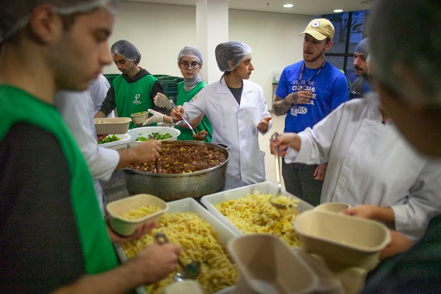

Projeto "Cozinha Comunitária"
O projeto Cozinha Comunitária garante acesso à alimentação saudável para pessoas em vulnerabilidade, oferecendo refeições nutritivas diariamente com apoio de doações e voluntários. Além de alimentar, promove educação alimentar, sustentabilidade e aproveitamento integral dos alimentos. Também funciona como espaço de apoio social, fortalecendo vínculos comunitários e oferecendo oportunidades de capacitação e geração de renda.